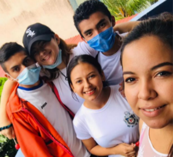

En Nicaragua se produce cacao de calidad, reconocido por la Organización Mundial del Cacao, ICCO por su siglas en inglés, al certificar al país como productor 100% de ,cacao fino o de aroma desde el 2015.
Con este cultivo los pequeños productores y la cooperativa contribuyen a la sostenibilidad ambiental al éste un cultivo perenne que además se combina con árboles y otras especies que sirven como garantía alimentaria, todo bajo un sistema agroforestal, disminuyendo la emisión de gases de efecto invernadero y ayudando a conservar el suelo y las fuentes hidrícas.
gerencia@granjaelnorteño

Somos los Creadores de Distribuidora Satr Plus S,A.
Quiénes Somos
Flor de Dalia, R.L es una cooperativa de servicios múltiples conformada por 342 socios, 31% mujeres que habitan en 19 comunidades del municipio del Tuma La Dalia, departamento de Matagalpa, los cuales decidieron organizarse a fin de alcanzar mejores mercados y precios para sus productos y así mejorar su nivel de vida y el de sus familias.
Leer más >

Historia
La cooperativa de Servicios Múltiples Flor de Dalia R, L, fue constituida el año 2004 y se dedica a la prestación de servicio agropecuarios, pequeña industria, ahorro y crédito, abastecimiento de bienes de usos y consumo entre otros.
Su principal actividad económica es el acopio y comercialización de arroz, cacao, café y miel.
Principales Rubros
Software
Computadoras
El café es otro cultivo que promueve la cooperativa con los pequeños productores bajo un enfoque agroecológico y de sostenibilidad ambiental y social.
Más información >Articulos Electronicos
La apicultura es otro de los componentes del sistema de producción de los pequeños productores socios de la cooperativa, con lo cual se contribuye a la supervivencia de las abejas que son el motor para la seguridad alimentaria y la preservación de especies arbóreas que son polinizadas por las abejas.
Más información >